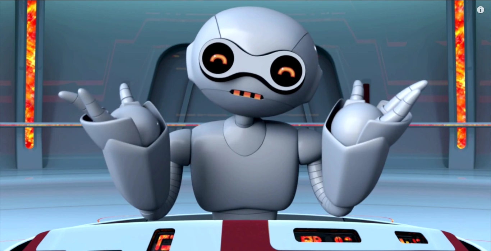

El Fugitoid es uno de los personajes más antiguos de Mirage Studios , anterior incluso a las Tortugas Ninja. Fue la primera creación conjunta de Eastman y Laird .
El diseño del Fugitoid se inspiró en el cómic Magnus, Robot Fighter 4000 AD de Russ Manning.
En 1985, fue un invitado especial en el número 5 del volumen 1 de las Tortugas Ninja de Mirage. A los fans les gustó tanto que decidieron fusionar universos, lo que haría que aparezca varias veces en la franquicia.
La más reciente aparición fue en el 2025, precisamente en los cómics 4, 5 y 6 de Tales of the TMNT.